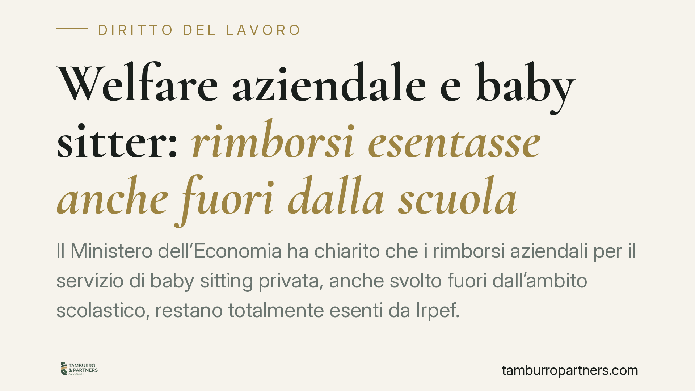

Welfare aziendale e baby sitter: rimborsi esentasse anche fuori dalla scuola
Il Ministero dell'Economia ha chiarito che i rimborsi aziendali per il servizio di baby sitting privata, anche svolto fuori dall'ambito scolastico, restano totalmente esenti da Irpef. La precisazione conferma le agevolazioni del 2016 e sblocca molti piani di welfare che erano rimasti fermi per incertezza interpretativa. Un passaggio rilevante per datori di lavoro e dipendenti con figli.

Il chiarimento del MEF
La questione ruotava attorno a un dubbio concreto: i rimborsi che l'azienda eroga al dipendente per pagare una baby sitter sono esenti da tasse solo se collegati alla frequenza scolastica, oppure anche quando il servizio si svolge fuori da quel perimetro?
Rispondendo a un atto di sindacato ispettivo presentato dalla senatrice Ester Mieli, la sottosegretaria all'Economia Sandra Savino ha confermato la linea più favorevole. I rimborsi per il servizio di baby sitting privata restano esenti da Irpef anche quando non sono legati all'ambito scolastico. Il MEF ha così ricondotto la fattispecie alle agevolazioni già previste nel 2016, chiudendo un'incertezza che frenava molti piani di welfare.
Inquadramento normativo
Il riferimento è l'art. 51 del TUIR (Testo Unico delle Imposte sui Redditi), la norma che individua ciò che concorre a formare il reddito di lavoro dipendente e, soprattutto, ciò che ne resta escluso.
In particolare, il comma 2 dell'art. 51 elenca una serie di somme e servizi erogati dal datore di lavoro che non costituiscono reddito imponibile. Tra questi rientrano le prestazioni e i rimborsi per la frequenza di asili nido e per i servizi di educazione e istruzione, oltre alle somme destinate all'assistenza dei familiari. La lettura del MEF estende la non imponibilità ai rimborsi per baby sitting privata anche al di fuori del contesto scolastico, in continuità con gli orientamenti dell'Agenzia delle Entrate del 2016.
In pratica: il beneficio non è tassato in capo al dipendente e, al ricorrere delle condizioni di legge, è deducibile per l'azienda. Questo è il meccanismo che rende il welfare conveniente per entrambe le parti.
Cosa cambia per aziende e dipendenti
Per il datore di lavoro, il chiarimento riduce il rischio di contestazioni fiscali su una voce di welfare molto richiesta. Molte imprese avevano sospeso o limitato i rimborsi per baby sitting per timore che l'Agenzia li considerasse imponibili se non collegati alla scuola. Ora quel freno viene meno.
Per il dipendente con figli, il vantaggio è diretto: la somma rimborsata non entra nel reddito e non subisce prelievo Irpef, a differenza di un aumento in busta paga di pari importo, che sarebbe invece tassato.
Resta però un punto fermo da non sottovalutare. L'esenzione non è automatica: dipende dal rispetto delle condizioni formali e documentali. Serve che il beneficio sia previsto da un piano di welfare correttamente strutturato, che la spesa sia tracciabile e giustificata, e che il rimborso resti nel perimetro tecnico delle somme agevolate. Un'erogazione generica, senza giustificativi, rischia di essere riqualificata come retribuzione e quindi tassata.
Cosa fare in concreto
- Verificate il regolamento di welfare: controllate se il piano aziendale include già i rimborsi per baby sitting e, in caso contrario, valutate di inserirli alla luce del chiarimento.
- Pretendete la tracciabilità: ogni rimborso deve essere sorretto da documentazione idonea (contratto con la baby sitter, ricevute, pagamenti tracciati). È l'elemento che regge l'esenzione in caso di controllo.
- Distinguete welfare e retribuzione: non confondete i rimborsi agevolati con premi o integrazioni in denaro, che seguono un regime fiscale diverso.
- Coordinate HR e consulente del lavoro: definite in anticipo tetti, modalità di richiesta e criteri di ammissibilità per evitare disparità tra dipendenti.
- Documentate il fondamento normativo: tenete traccia del riferimento all'art. 51 TUIR e agli orientamenti interpretativi, utile a motivare la scelta in sede di eventuale verifica.
Il welfare aziendale resta uno strumento efficiente, ma la sua convenienza fiscale si regge sulla correttezza formale. Un piano ben costruito protegge l'azienda e offre un vantaggio reale al dipendente; un piano improvvisato espone entrambi al rischio di riqualificazione.
---
*Contributo informativo a cura di Tamburro & Partners - Avv. Giuseppe Tamburro. Non costituisce parere legale.*
Ogni storia di lavoro ha i suoi tempi.
Se gestisci HR e vuoi un confronto su contenzioso, ispezioni o licenziamenti, scrivi allo studio. Ti rispondiamo entro un giorno lavorativo.